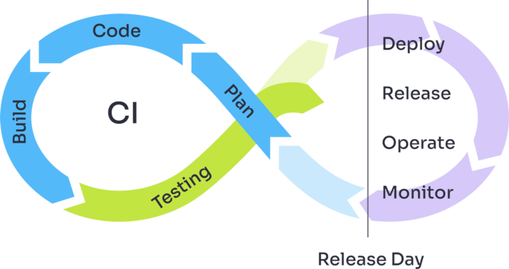

We have selected reasons and solutions from working with enterprise leaders in DACH. We discuss why these rarely get brought up by the teams, what indicators to look for and, what objections to expect.
OUR APPROACH REQUEST A DEMOHigh hiring costs, turnover, and lengthy onboarding due to complex systems limit ROI. Engineers seek modern technologies, but legacy systems create barriers.
Talent Bottlenecks are one of the easier problems to identify, usually characterized by these problems
 Engineering positions remain unfilled for >6 months
Motivated & skilled employees wear out in < 3 years
Hires lack specific skills and autonomy
Engineering positions remain unfilled for >6 months
Motivated & skilled employees wear out in < 3 years
Hires lack specific skills and autonomy
of software teams had adopted a DevOps approach in 2021
of developers want to acquire DevOps skills
of IT recruiters are actively looking to hire DevOps talent
Existing bottleneck contributors might object for fear of losing their high leverage positions.
Highly skilled individuals may prefer (unrealistic) skill-up programs across the company over simplification by tools because they lose their mentoring appeal.

Lack of standardization leads to fragmented processes, and slow iteration cycles prevent delivered software from meeting business objectives.
Inefficient workflows occur in many different places and can be identified by the following indicators
Agile development process with release cycles of >3 weeks >6 months
Software teams constantly delivering behind schedule or above budget
Developers pointing towards operations for delays and vice versa
Broken feedback cycles: Software does not satisfy requirements (and the team worked on it for more than 2 weeks)

What if there was another way that relied on 3 core principles?
Instead of having a fragmented landscape of workflow that don’t fit together, workflows can be standardized and streamlined.
Oftentimes, developers have to rely on operations for supportive activities. With a self-service approach, this dependence is eliminated.
Ending ops & dev only focussing on their specific tasks without understanding the other fosters collaboration and faster processes.
Existing workflows already constitute „best practices“ → not true if any of the indicators apply
Requirements for quality control do not allow more agile feedback cycles→ often more of a cover your back argumentl
Enterprise architects and engineers often resist major changes due to attachment bias, sunk learning investments, and perceived stability risks. Resistance to limiting customizability and prioritization of technologies that boost individual career prospects create misaligned incentives, hindering organizational progress.
Typically these misaligned preferences can be spotted by these responses
Suggested changes are met with scepticism per default
Simplification is not welcomed but objected as „introducing limitations“
Simplification enhances developer experience, but internal opposition remains strong. A guided proof-of-value workshop can help demonstrate the benefits and loosen resistance to change.
Misconceptions around opinionated best practices create resistance, despite their ability to streamline workflows and enable greater experimentation without imposing real limitations.
Existing DevOps cornerstone contributors might object because they loose leverage -> reaffirm them that they will be needed in a coaching capacity
Work experience with complex technologies (i.e. Kubernetes) rewards future salary premium → individually rational but not for the whole organization